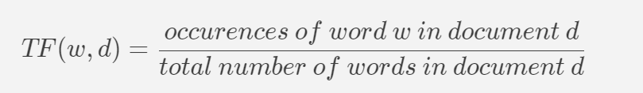
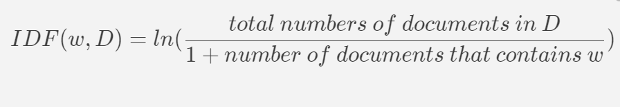
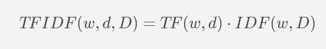

minutes read
In April 2023, I was working under Professor Shan Aman-Rana on the paper "Screen Now, Save Later? The Trade-Off between Administrative Ordeals and Fraud". One of the objectives of the paper was to examine the difference between the financial information companies provided when applying for Paycheck Protection Program (PPP) and for Emergency Injury Disaster Loan (EIDL) during Covid time to see whether they were providing inconsistent information. I was assigned the task to collect and process the EIDL dataset, which contains columns of the names and addresses of companies applying for EIDL, and merge this dataset with the existing PPP dataset, which contains more than 11 million rows, based on the names and addresses combinations. However, the key problem we are facing is that since each row of the dataset is recorded by the companies themselves, there are countless number of misspellings and abbreviations, making merging with exact identifiers impossible. In order to proceed, we need to conduct a large scale fuzzy matching between the EIDL and PPP dataset.
暂定
Most data analysis software and languages already come with supports for string matching tasks, but most of these modules' performances fall sharply as number of instances increase. The dilemmas most of them face is that exact fuzzy matching is effectively an O(n2) task, since for every entry we need to compare the similarity ratio of it with all other entries. This is simply inefficient and the number of computations needed to be done becomes unbearable as number of entries scale up. Throughout years, data analytics practitioners came up with all different kinds of solutions that fit their needs, and after hours of searches online, I came across this post, which utilizes NLP techniques such as TF-IDF vectorization to vectorize the identifier strings into vectors of shorter strings (Grams) and compute the cosine similarity among these grams to identify vectors (strings) that are similar to each other. After designing my own algorithm based on this technique, I was able to achieve significantly more efficient result than that of traditional fuzzy matching algorithms.
In Natural Language Processing, any corpus needs to have its features (words) extracted and processed first before any NLP models can be applied.
A common text extraction technique is TF-IDF vectorization, which calculates the TF-IDF score of any word in a given passage.
A more detailed discussion on TF-IDF can be found in this article,
but to give a quick summary:
● "TF" stands for "term frequency", which measures the frequency of a word (w) in a document (d). TF is defined as the ratio of a word’s occurrence (w) in a document (d) to the total number of words in a document.

● "IDF" stands for "inverse document frequency", which is the natural log of the reciprocal of the document frequency of document d in the total corpus (D) (the collection of documents).

We thus define TF-IDF as

What does this mean conceptually though? TFIDF vectorization assigns a numerical value to the importance of the word in an
entire corpus, and the higher the score is, the more important the word is to the corpus.
Its first component TF(w, d) is higher the more times a word w appears in a document d,
but the IDF(w, D) part diminishes the importance of word w the more documents in
D contains w as it gets smaller as more documents contain w,
because this increases the likelihood that word w is just a commonly used English word that
does not have very useful particular meanings (words like the, of etc).
Note that the exact implementation of TDIDF is slightly different from algorithm to algorithm
(the log base in IDF, which in sklearn is e, the natural log), but the basic idea should be the same.
So why does this matter this us? Now, the power of TFIDF can be applied to small word texts as well.
If we define w as a character (or a subset of characters, which are commonly referred to as GRAMS)
in an address/name, d as one entity of address/name, and D as the entire columns of address/Name,
then we can measure the importance of a subset of characters in an entire collection of names/addresses.
Each entity (an address/a name) can then be represented by a vector with which each element representing
the TFIDF score of a subset of its characters.
Now that each entity is vectorized, we can compute the cosine similarities between each entity of the datasets
we are trying to match together (PPP and EIDL Advance in our case).
A detailed explanation on cosine similarity can be found here.
We won't be spending additional time here elaborating the mathematical concepts.
While in general vector-wise computation is fairly efficient in Python, the sheer number of dataset size we have means that we need to use something more efficient to perform these vector multiplication.
We ended up using a module developed by ING Group which specializes in sparse matrix multiplications and top-n selections.
In fact, this module is specifically designed for efficient string comparisons with vectorized string entities by ING.
Below is a snippet of the code I wrote to complete the task based on the ideas introduced above.
First of all, we need to install all relevant packages:
pip install pandas
pip install numpy
pip install scikit-learn # we use sklearn's TFIDF vectorizers to vectorize the company name and address strings
pip install rapidfuzz # we only use the above mentioned methods for stage 1 fuzzyMatching; once a specific subsets
# of company names are located, it will be easier to use an existing fuzzyMatching library
# to perform the address name matching
pip install sparse_dot_topn # package used for fast sparse matrix multiplication
We then define our algorithm. Since we have 2 entity identifiers (company names and addresses),
instead of concatenating them into a single string and pass the combined string for vectorization,
which
1) given the fixed Gram size, will lead to drastic increase to the sparse matrix size and
more expensive computations;
2) potential distort meanings of the strings, for example, two different companies
with different names and addresses but similar concatenated strings will lead to these
companies having similar cosine similarity score (Company A called "Company Awesome" with address
"Street 12 North" and company B called "Company Awesome Street" with address "12 North" will have
the same cosine similarity score despite being different companies entirely),
we design the algorithm
to be a 2-stages fuzzy matching:
Stage 1 Fuzzy Matching on Company Name Only:
Use TFIDF vectorization to vectorize company names and perform sparse matrix multiplication on
company names only using ING's algorithm mentioned above. We use 70% as the cutoff point
for fuzzy matching (for any one company record, any other entity with matching score below 70%
will not be chosen).
Stage 2 Fuzzy Matching on Company Address Only:
After entities are paired up with other entities that have above 70% matching rates with them,
the matching pool size has now been significantly reduced, and it will simply be easier and
more efficient to use an existing fuzzyMatching algorithm as opposed to using TFIDF vectorization
again. For this purpose we choose
Rapid Fuzz
module since it offers reasonable speed for fuzzy matching for datasets of size of several thousand
records.
# Task:
# Conduct fuzzy matching
import re
import pandas as pd
from rapidfuzz import process, fuzz
from sklearn.feature_extraction.text import TfidfVectorizer
from ftfy import fix_text
import re
import numpy as np
from scipy.sparse import csr_matrix
from sparse_dot_topn import awesome_cossim_topn
import scipy
from rapidfuzz import process, fuzz
# break company names into sub-strings of size 3 (change if needed) called "Grams"
def ngrams(string, n=3):
string = fix_text(string)
string = string.encode("ascii", errors='ignore').decode()
string = string.lower()
chars_to_remove = [")", "(", ".", "|", "[", "]", "{", "}", "'"]
rx = '[' + re.escape(''.join(chars_to_remove)) + ']'
string = re.sub(rx, '', string)
string = string.replace('&', 'and')
string = string.replace(',', ' ')
string = string.replace('-', ' ')
string = string.title()
string = re.sub(' +', ' ', string).strip()
string = ' ' + string + ' '
string = re.sub(r'[,-./]|\sBD', r'', string)
ngrams = zip(*[string[i:] for i in range(n)])
return [''.join(ngram) for ngram in ngrams]
def get_matches_df(sparse_matrix, messy_name_vector, clean_name_vector, top=100):
non_zeros = sparse_matrix.nonzero()
sparserows = non_zeros[0]
sparsecols = non_zeros[1]
if top:
nr_matches = top
else:
nr_matches = sparsecols.size
messy_side = np.empty([nr_matches], dtype=object)
clean_side = np.empty([nr_matches], dtype=object)
similairity = np.zeros(nr_matches)
for index in range(0, nr_matches):
messy_side[index] = messy_name_vector[sparserows[index]]
clean_side[index] = clean_name_vector[sparsecols[index]]
similairity[index] = sparse_matrix.data[index]
return pd.DataFrame({'EIDL_side': messy_side,
'PPP_side': clean_side,
'similairity': similairity})
def address_matching(sparse_matrix, messy_address_vector, clean_address_vector, EIDL_subset, PPP_subset):
non_zeros = sparse_matrix.nonzero()
# sparserows == sparsecols
sparserows = non_zeros[0]
sparsecols = non_zeros[1]
for i in range(len(sparserows)):
messy_address_name = messy_address_vector[
sparserows[i]] # get the address of the row that has similar names with PPP's firm names
clean_address_name = clean_address_vector[sparsecols[i]]
if fuzz.ratio(messy_address_name, clean_address_name) > 70: # if name matches, we assign firm_id
EIDL_subset['firm_id'][sparserows[i]] = PPP_subset['firm_id'][sparsecols[i]]
# get the selected columns of PPP (borrowername, borrower address, state, firm_id)
PPP_selected_columns = pd.read_stata(r"C:\Users\james\Desktop\Econ_Research\EIDL data\PPP_selected_columns.dta")
PPP_selected_no_dup = PPP_selected_columns.drop_duplicates(subset='firm_id')
# drop nan
PPP_selected_no_dup.drop([4174169], inplace=True)
PPP_state_list = list(PPP_selected_no_dup['borrowerstate'].unique())
# load EIDL dataset
EIDL_2020 = pd.read_csv(r"C:\Users\james\Desktop\Econ_Research\EIDL_2020.csv")
# fuzzy matching by state
state_list = list(EIDL_2020['LEGALENTITYSTATECD'].unique())
EIDL_matched = pd.DataFrame()
# testing different fuzzy matching techniques
for state in state_list[1:]:
print(f"Processing state {state} ...")
# get subbset
cali_subset_PPP = PPP_selected_no_dup.loc[PPP_selected_no_dup['borrowerstate'] == state]
cali_subset_PPP_indexed = cali_subset_PPP.reset_index()
cali_subset_EIDL = EIDL_2020.loc[EIDL_2020['LEGALENTITYSTATECD'] == state]
cali_subset_EIDL_indexed = cali_subset_EIDL.reset_index()
# Get the company name column
cali_name_col_EIDL = cali_subset_EIDL['AWARDEEORRECIPIENTLEGALENTITYNAME'].values.astype('U')
cali_name_col_PPP = cali_subset_PPP['borrowername'].values.astype('U')
cali_address_col_EIDL = cali_subset_EIDL['LEGALENTITYADDRLINE1'].values.astype('U')
cali_address_col_PPP = cali_subset_PPP['borroweraddress'].values.astype('U')
####################################################################################################################
# Stage 1 Fuzzy Matching by Company Name: Use TFIDF vectorization to vectorize company names and perform sparse matrix multiplication
# using ING's algorithm
vectorizer = TfidfVectorizer(min_df=1, analyzer=ngrams)
tf_idf_matrix_EIDL = vectorizer.fit_transform(cali_name_col_EIDL)
tf_idf_matrix_PPP = vectorizer.transform(cali_name_col_PPP)
matches = awesome_cossim_topn(tf_idf_matrix_EIDL, tf_idf_matrix_PPP.transpose(), 5, 0.9, use_threads=True, n_jobs=4)
print(f"Matching for state {state} is completed!")
# save the matches sparse matrix to a temp folder
scipy.sparse.save_npz(f"EIDL_temp/{state}_name_fuzzyMatching.npz", matches)
####################################################################################################################
# Stage 2 Fuzzy Matching: which only matches the addresses of companies that already have above 70% (choose your
# own metrics if needed) matching score
address_matching(matches, cali_address_col_EIDL, cali_address_col_PPP, cali_subset_EIDL_indexed,
cali_subset_PPP_indexed)
cali_subset_EIDL_indexRemoved = cali_subset_EIDL_indexed.drop(columns = ['index'])
EIDL_matched = pd.concat([EIDL_matched, cali_subset_EIDL_indexRemoved])
print(f"Writing data for state {state} ...")
EIDL_matched.to_csv("EIDL_temp/EIDL_matched.csv", index = False)
Using the above algorithm with a 70% cut off mark for fuzzy matching, we are able to obtain a result dataset of PPP dataset with the respectively matched EIDL identifiers just under 3 hours. Given the size of the dataset, this is indeed a satisfactory result compared to the traditional fuzzy matching algorithms.
If you are interested in seeing the full code, you can visit the Github repo of this project here.